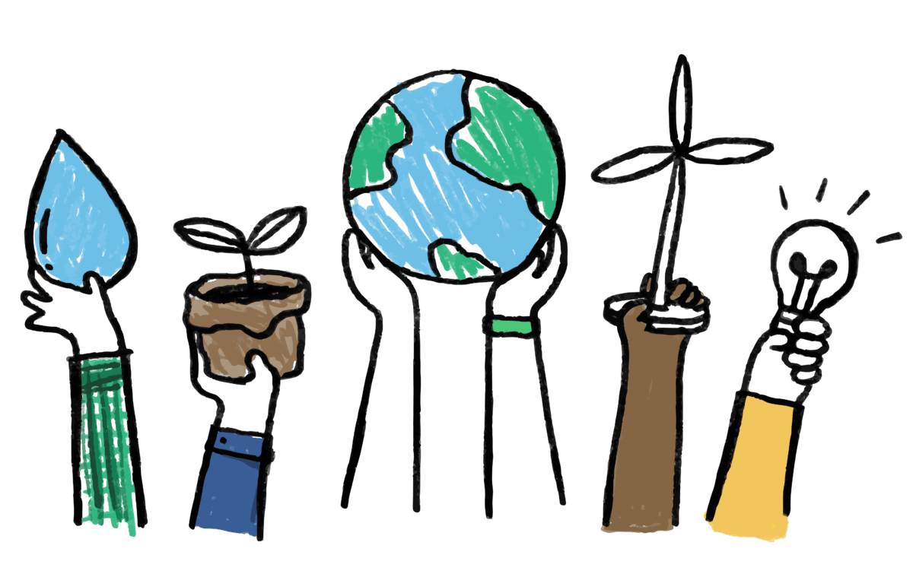

Desarrollo sostenible

1960-1970: Los Primeros Signos de Conciencia Ambiental y Desarrollo Sostenible
En la década de 1960, surgieron los primeros indicios de preocupación por el medio ambiente a nivel internacional. En 1969, treinta y tres países africanos firmaron un acuerdo que mencionaba por primera vez el término «desarrollo sostenible». Si bien este evento marcó un punto de partida, el concepto aún no estaba completamente desarrollado.